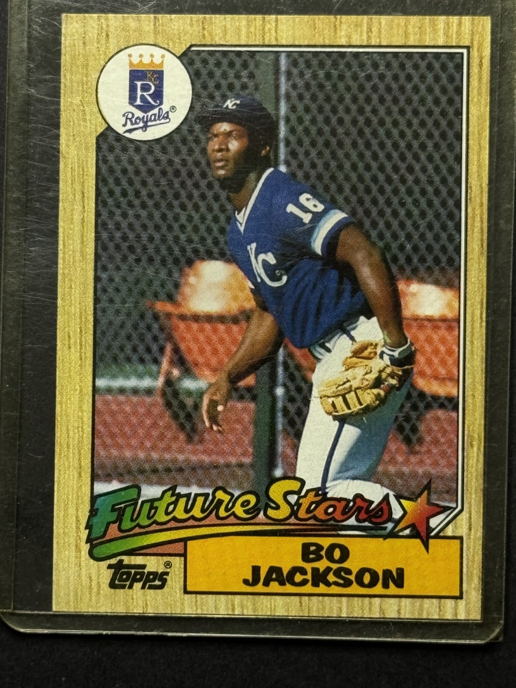

Actual card pictured · Front / back · One physical card per SKU
BASEBALL CARD · PERMANENT RECORD · C-BB-0005
Raw1987ToppsROOKIE CARD
Bo Jackson
1987 Topps Future Stars #170 · Kansas City Royals
Bo Jackson Future Stars rookie card
CATALOG VALUEValue TBDCondition and market review pending · not a formal appraisal
- SKU
- C-BB-0005
- Sport
- Baseball
- Set / Card
- 1987 Topps #170
- Team
- Kansas City Royals
- Position
- Outfield
- Rookie
- Yes
- Hall of Fame
- No
- Key Note
- Bo Jackson Future Stars rookie card
- Inventory Note
- Key early Bo Jackson card. Actual copy photographed front and back.
- Status
- In Collection · Not currently for sale
- Permanent URL
- kacvault.com/item-c-bb-0005.html